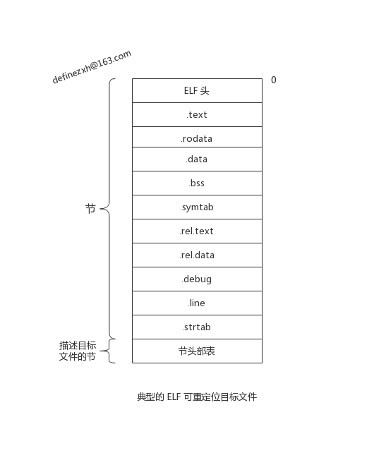
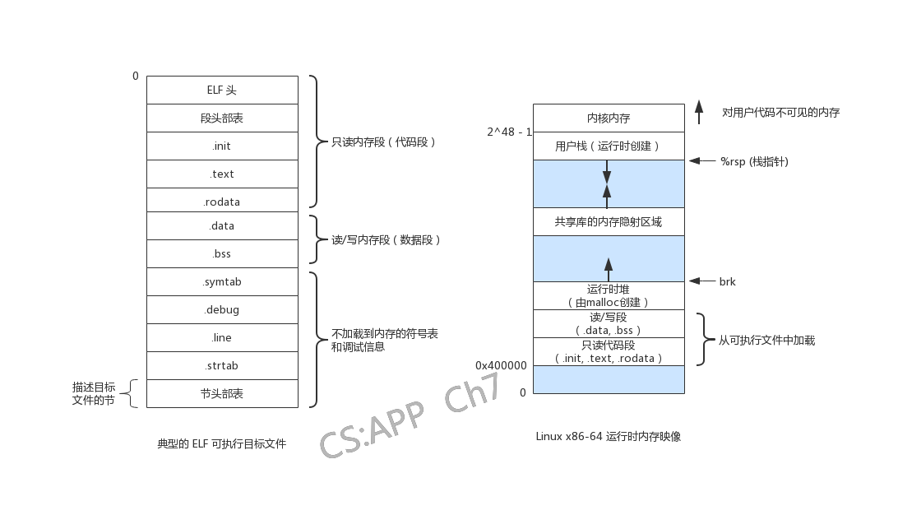

学习 CS:APP - 链接 的记录
在实际操作的过程中，测试的数据和书里面的内容有一些出入了，如重定位的方式，现在默认都使用 GOT+PLT 的方式进行重定位，与此带来的是 .rel.data 被干掉，使用 GOT 的方式访问。
readelf 和 objdump 两个工具可以很好的分析生产的目标文件内容。
cpp -> cc1 -> as -> ld
gcc 中打开 -v 选项就可以看到调用的步骤，不过在高版本中，cpp 合并至 cc1 中了。
以一组可重定位目标文件和参数作为输入，生成一个完全链接的，可以加载和运行的可执行目标文件作为输出。
链接器需要完成的任务有两个：
这里所说的符号对应于一个 函数、一个 全局变量、或一个 静态变量（在C中以 static 声明），其实就是对应汇编文件中的那些 label。
目标文件的三种形式：
linux 上的目标文件格式为 ELF (Executable and Linkable Format)。一个典型的文件格式如下：

ELF 头以一个 16 字节的序列开始，序列描述了生成该文件系统字的大小和字节顺序。ELF 头剩下的部分包含帮助连接器语法分析和解释目标文件中的信息，包括
夹在 ELF 头和节头部表之间的都是节，不同节的位置和大小都是节头部表描述的，典型的包含以下的几个节：
-g 选项编译时才会得到这张表。每个可重定位目标模块 \(m\) 都有一个 符号表，包含 \(m\) 定义和引用的符号的信息，在链接器的上下文中，有三种不同的符号：
链接器解析符号引用的方法就是将每个引用与它对应的可重定位目标文件的符号表中的一个确定的符号定义关联起来。对于局部符号及静态局部变量解析比较简单：只需要保证每个模块中的每个局部符号只有一个定义。对于全局符号的解析：当编译器遇到一个不是在当前模块定义的符号时，会假设该符号时在其他某个模块中定义的，生成一个链接器符号表条目，并交给链接器处理；如果链接器在任何输入的模块中都找不到该定义就报错并且终止。
在编译时，将每个全局符号做一个区分，函数和已初始化的全局变量是 强符号，未初始化的全局变量是 弱符号（对应 .COMMON 节的符号）。
链接器使用以下规则来处理多重定义的符号名：
Linux 下静态库以一种称为存档（archive）的特殊格式文件保存，其为一系列连接组成的可重定位目标文件的结合，有一个头部来描述灭个成员目标文件的大小和位置。链接器工作时，将目标模块引用的静态库中的模块复制到可执行文件中。静态库有一个很大的特点时每一个程序中都有一个引用的静态库副本。
在符号解析阶段，链接器按照顺序扫描可重定位目标文件和存档文件。在这次扫描中，链接器维护
初始化时，三个集合 \(E\)、\(U\) 和 \(D\) 均为空。解析过程如下
因为扫描的过程是按照顺序进行的，所有当出现依赖时，需要手动进行调整，使得引用的定义在声明之前。如果需要满足库依赖需求，可以在输入文件列表中 重复 输入库。
重定位 将每个符号引用和符号定义关联起来，并且为每个符号分配运行时地址。
ELF 中最为基本的重定位类型：
当汇编器遇到对最终位置未定义的目标引用时，就会生成一个 重定位条目，告诉链接器在合并目标文件时如何修改这个引用，重定位的条目 代码段放在 .rel.text 中，已初始化的数据放在 .rel.data 中。
下面的算法是 CS:APP 中的列出的, 在实际的 GCC-8 中测试情况由不同, 这个地方有所改变
ELF重定位条目的结构如下：
typedef struct {
long offset; // 需要被修改的应用的节偏移
long type:32; // 重定位类型
long symbol:32; // 被修改引用指向的符号
long addend; // 重定位使用的调整偏移值
} Elf64_Rela;使用了以下的算法（伪代码）
ADDR(addr) {
// 选择的运行时地址
}
foreach sections s {
foreach relocation entry r {
refptr = s + r.offset;
// 相对地址
if (r.type == R_X86_64_PC32) {
refaddr = ADDR(s) + r.offset; // ref runtime address
*refptr = (unsigned)(ADDR(r.symbol) + r.addend - redaddr);
}
// 绝对地址重定位
if (r.type == R_X86_64_32)
*refptr = (unsigned)(ADDR(r.symbol) + r.addend);
}
}这里使用一个示例来说明这个寻址情况，本编译器版本为 GCC-8(WSL)：
// main.c
int sum(int *a, int n);
int array[2] = {1, 2};
int main() {
int val = sum(array, 2);
return val;
}
// sum.c
int sum(int *a, int n) {
int i, s = 0;
for (i = 0; i < n; i++)
s += a[i];
return s;
}不使用优化选项生成 main.o 和 sum.o 可重定位目标文件。
使用 objdump -dx main.o 选项查看 mian.o 及可执行文件完全链接后反汇编代码：
// objdump -dx main.o
// main.o
Disassembly of section .text:
0000000000000000 <main>:
0: 48 83 ec 08 sub $0x8,%rsp
4: be 02 00 00 00 mov $0x2,%esi
9: 48 8d 3d 00 00 00 00 lea 0x0(%rip),%rdi # 10 <main+0x10>
c: R_X86_64_PC32 array-0x4
10: e8 00 00 00 00 callq 15 <main+0x15>
11: R_X86_64_PLT32 sum-0x4
15: 48 83 c4 08 add $0x8,%rsp
19: c3 retq
// objdump -dx a.out
// 部分可执行目标文件的反汇编代码
Sections:
Idx Name Size VMA LMA File off Algn
9 .init 00000017 0000000000001000 0000000000001000 00001000 2**2
CONTENTS, ALLOC, LOAD, READONLY, CODE
10 .plt 00000010 0000000000001020 0000000000001020 00001020 2**4
CONTENTS, ALLOC, LOAD, READONLY, CODE
11 .plt.got 00000008 0000000000001030 0000000000001030 00001030 2**3
CONTENTS, ALLOC, LOAD, READONLY, CODE
12 .text 00000181 0000000000001040 0000000000001040 00001040 2**4
CONTENTS, ALLOC, LOAD, READONLY, CODE
20 .got 00000028 0000000000003fd8 0000000000003fd8 00002fd8 2**3
CONTENTS, ALLOC, LOAD, DATA
21 .got.plt 00000018 0000000000004000 0000000000004000 00003000 2**3
CONTENTS, ALLOC, LOAD, DATA
22 .data 00000018 0000000000004018 0000000000004018 00003018 2**3
···
SYMBOL TABLE:
0000000000004018 w .data 0000000000000000 data_start
0000000000004028 g O .data 0000000000000008 array
0000000000004030 g .data 0000000000000000 _edata
Disassembly of section .text:
0000000000001040 <_start>:
···
0000000000001125 <main>:
1125: 48 83 ec 08 sub $0x8,%rsp
1129: be 02 00 00 00 mov $0x2,%esi
112e: 48 8d 3d f3 2e 00 00 lea 0x2ef3(%rip),%rdi # 4028 <array>
1135: e8 05 00 00 00 callq 113f <sum>
113a: 48 83 c4 08 add $0x8,%rsp
113e: c3 retq
000000000000113f <sum>:
···汇编器为 sum 和 array 产生了重定义条目，其分别对应的
Elf64_Rela结构的值
// array
r.offset = 0xc;
r.type = R_X86_64_PC32;
r.symbol = array;
r.addend = -0x4;
// sum
r.offset = 0x11;
r.type = R_X86_64_PLT32;
r.symbol = sum;
r.addend = -0x4;链接器重定位 .data 的地址后, 对 array 的访问的直接产生PC相对引用计算, 增加一个重定位，如下
$PC \leftarrow PC + $0x2ef3 = 0x113a + 0x2ef3 = 0x4028
另一种 R_X86_64_PLT32 在位置无关代码的地方说明。
可执行目标文件格式类似于可重定位目标文件的格式。相比较于可重定位目标文件来说，多了 .init 节，包括了程序的入口点，为程序运行时第一行执行的指令地址，节中包含了一个 _start 函数，加载器在执行的时候会调用这个函数.

静态库的有两个的很大的缺点:
改变这种情况使得多个进程共享一个程序的副本, 最重要的特点就是 加载到内存的任何位置都无需链接器重新链接(每个进程仍然会有自己的读写数据块). 加载而无需重定位的代码称为 位置无关代码,
位置无关代码的生成:
这里使用两个新的例子
// gcc -fpic -shared -Og -o libvector.so addvec.c multvec.c
// addvec.c
int addcnt = 0;
void addvec(int *x, int *y, int *z, int n) {
addcnt++;
for (int i = 0; i < n; i++)
z[i] = x[i] + y[i];
}
// multvec.c
int multcnt = 0;
void multvec(int *x, int *y, int *z, int n) {
multcnt++;
for (int i = 0; i < n; i++)
z[i] = x[i] * y[i];
}使用 objdump -dx libvector.so 得到部分汇编指令
Sections:
Idx Name Size VMA LMA File off Algn
15 .got 00000030 0000000000003fd0 0000000000003fd0 00002fd0 2**3
CONTENTS, ALLOC, LOAD, DATA
17 .data 00000008 0000000000004018 0000000000004018 00003018 2**3
CONTENTS, ALLOC, LOAD, DATA
SYMBOL TABLE:
0000000000003fd0 l d .got 0000000000000000 .got
00000000000010f5 <addvec>:
10f5: 4c 8b 05 e4 2e 00 00 mov 0x2ee4(%rip),%r8 # 3fe0 <addcnt-0x44>
0000000000001123 <multvec>:
1123: 4c 8b 05 ae 2e 00 00 mov 0x2eae(%rip),%r8 # 3fd8 <multcnt-0x50>一个目标文件加载进内存时，数据段和代码段的偏移总是保持不变的。因此代码段和数据段中任何变量之间的距离都是一个 运行时常量，与代码段和数据段所在内存的绝对位置时无关的。
编译器利用以上事实在数据段开始的地方生成了一张 全局偏移量表（Global Offset Table, GOT）, 在 GOT 中，每个被这个目标模块引用的全局变量都有一个 8字节 条目，编译器为GOT中的每个条目都生成了一个重定位记录。
在 libsum.so 中, addcnt 和 multcnt 的地址分别为 3fe0 和 3fd8，为GOT表中的第三和第二个条目，并且利用数据段和代码段之间运行时不变的距离产生直接PC相对引用，同前一个示例中 array.
GCC 使用一种 延迟绑定(lazy binding) 的技术，将过程地址的绑定推迟到第一次调用该过程时，这样也可以避免动态链接器在加载时进行很多不必要的重定位。
延迟绑定时通过两个数据结构之间的交互来完成的：GOT 和 过程链接表（Procedure Linkage Table, PLT）. 如果一个目标模块调用定义在共享库中的任何函数，那么就会产生 自己的 GOT 和 PLT. GOT 是数据段的一部分，PLT 是代码段的一部分。
部分反汇编指令如下
// objdump -dx a.out
Sections:
Idx Name Size VMA LMA File off Algn
10 .init 00000017 0000000000001000 0000000000001000 00001000 2**2
CONTENTS, ALLOC, LOAD, READONLY, CODE
11 .plt 00000030 0000000000001020 0000000000001020 00001020 2**4
CONTENTS, ALLOC, LOAD, READONLY, CODE
12 .plt.got 00000008 0000000000001050 0000000000001050 00001050 2**3
CONTENTS, ALLOC, LOAD, READONLY, CODE
13 .text 00000191 0000000000001060 0000000000001060 00001060 2**4
CONTENTS, ALLOC, LOAD, READONLY, CODE
21 .got 00000028 0000000000003fd8 0000000000003fd8 00002fd8 2**3
CONTENTS, ALLOC, LOAD, DATA
22 .got.plt 00000028 0000000000004000 0000000000004000 00003000 2**3
CONTENTS, ALLOC, LOAD, DATA
23 .data 00000020 0000000000004028 0000000000004028 00003028 2**3
CONTENTS, ALLOC, LOAD, DATA
Disassembly of section .plt:
0000000000001020 <.plt>:
1020: ff 35 e2 2f 00 00 pushq 0x2fe2(%rip) # 4008 <_GLOBAL_OFFSET_TABLE_+0x8>
1026: ff 25 e4 2f 00 00 jmpq *0x2fe4(%rip) # 4010 <_GLOBAL_OFFSET_TABLE_+0x10>
102c: 0f 1f 40 00 nopl 0x0(%rax)
0000000000001030 <printf@plt>:
1030: ff 25 e2 2f 00 00 jmpq *0x2fe2(%rip) # 4018 <printf@GLIBC_2.2.5>
1036: 68 00 00 00 00 pushq $0x0
103b: e9 e0 ff ff ff jmpq 1020 <.plt>
0000000000001040 <addvec@plt>:
1040: ff 25 da 2f 00 00 jmpq *0x2fda(%rip) # 4020 <addvec>
1046: 68 01 00 00 00 pushq $0x1
104b: e9 d0 ff ff ff jmpq 1020 <.plt>
0000000000001145 <main>:
1163: e8 d8 fe ff ff callq 1040 <addvec@plt>
···
1180: e8 ab fe ff ff callq 1030 <printf@plt>
PLT[0] 跳转至动态链接器中。PLT[1] 调用启动函数，初始化执行环境。PLT[1] 开始为用户代码调用的函数，在示例中为 PLT[1] 为 printf，PLT[2] 为 addvecGOT[0] 和 GOT[1] 包含动态链接器在解析函数地址时使用的信息。GOT[2] 为 动态链接器的入口地址。GOT[3] 之后为对应调用的函数。示例中 GOT[4] 对应 addvecGOT 和 PLT 协同工作的步骤如下, 第一次调用 addvec：
第二次调用 addvec:
理解 ELF 格式文件有助于分析程序的结构及运行过程。
链接中最重要的步骤就是重定位，然后链接器和汇编器围绕重定位进行一系列的处理。GOT 和 PLT 对重定位是比较简单粗暴且有效的处理。